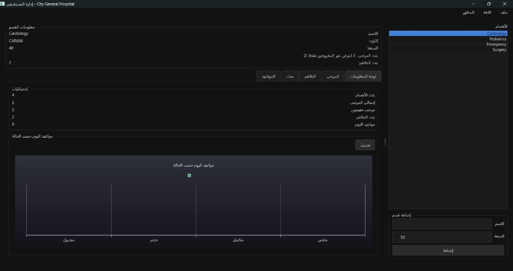

City Hospital Management (GUI)

Overview
Python-based application to manage hospital operations with a dark-mode PySide6 GUI. Layered architecture (Domain → DB → GUI) for scalability and maintainability.
Problem
Manual hospital workflows are error-prone and slow. Hospitals need a centralized system to track patients, staff, departments, and appointments, and provide real-time statistics.
Approach
- Domain (OOP): Person (base), Patient, Staff, Department, Hospital.
- Database (SQLite): persistent storage; CRUD for patients, staff, appointments.
- GUI (PySide6): dark dashboard; tabs for Departments, Patients, Staff, Search, Appointments.
- Stats: totals for patients/staff/appointments; appointment status chart.
- Workflows: add/search patients/staff; assign to departments; discharge/transfer patients; schedule appointments.
Results
- Efficiency: reduced manual record work.
- Scalability: layered design eases future features (billing, reports, auth).
- UX: dark-mode UI improves readability.
- Data integrity: structured, persistent storage with SQLite.
Stack
Python 3.x, PySide6 (Qt for Python), SQLite3 • Tools: VS Code, GitHub
Future Enhancements
- User authentication (admin/doctor/nurse roles)
- Medical report generation (PDF/Excel)
- Notifications/reminders for appointments
- Integration with external health APIs